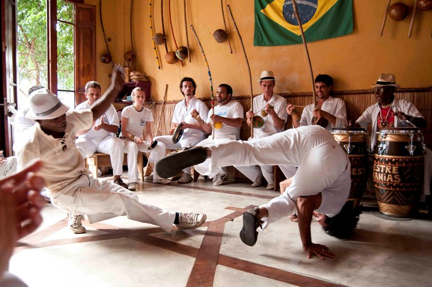
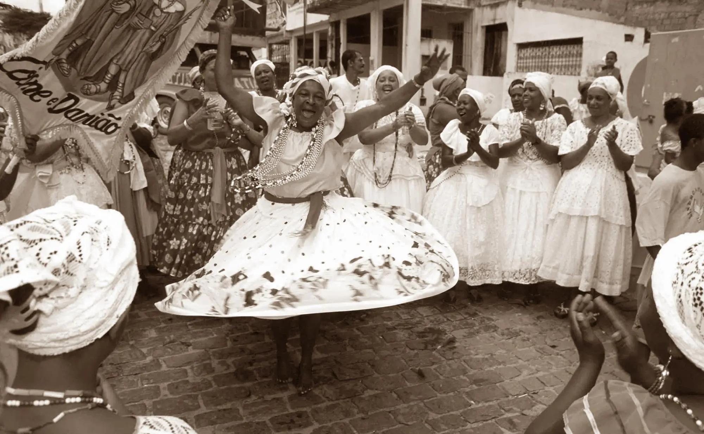
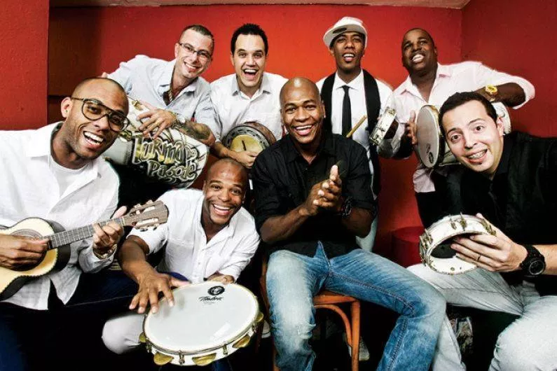
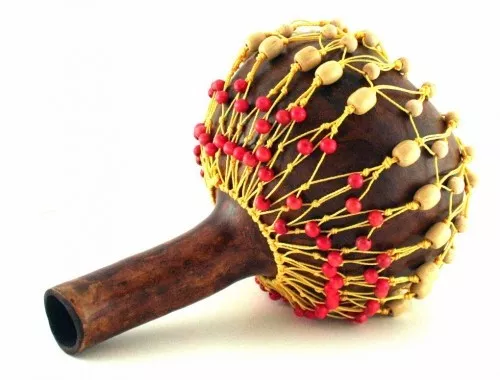
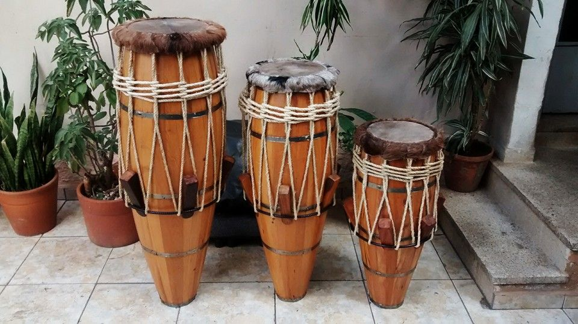
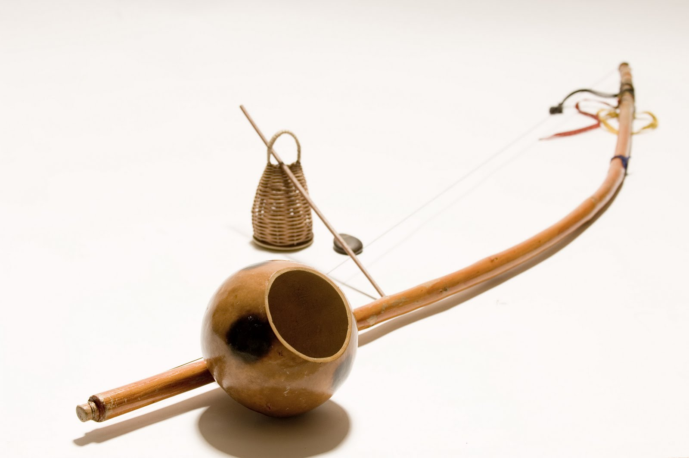

O samba é um gênero musical que nasceu e se desenvolveu no Brasil, com raízes profundamente enraizadas na cultura afro-brasileira. Sua história remonta aos tempos da escravidão, quando os africanos trazidos para o país trouxeram consigo suas tradições musicais e ritmos característicos.
Os primeiros registros de samba datam do final do século XIX e início do século XX, nas regiões portuárias do Rio de Janeiro, como a Praça Onze e a Pequena África. Nessas áreas, os escravos libertos e seus descendentes se reuniam para celebrar, dançar e tocar seus instrumentos tradicionais, como o cavaquinho, o pandeiro e o violão.
Inicialmente, o samba era marginalizado pela elite da sociedade, considerado uma expressão cultural "inferior" e associado a locais de diversão noturna e prostituição. No entanto, sua popularidade cresceu rapidamente entre as camadas mais pobres da população, e sua influência começou a se espalhar para além das áreas urbanas do Rio de Janeiro.


O samba no século XX
No século XX, o samba passou por várias transformações e influências, refletindo os diferentes contextos sociais, políticos e culturais vividos pelo Brasil ao longo desse período.
No início do século, o samba ainda era uma expressão musical marginalizada e associada às camadas mais populares da sociedade. Era principalmente praticado em ambientes informais, como rodas de samba nas comunidades, bares e nas festas populares, como o carnaval.
Durante a década de 1930, o samba ganhou maior reconhecimento e visibilidade, graças ao trabalho de compositores renomados como Noel Rosa, Cartola e Ary Barroso. Esses artistas ajudaram a elevar o samba ao status de música nacional e popularizaram suas composições por meio de gravações e apresentações em rádios.
Nos anos 1940 e 1950, surgiu o samba-canção, um subgênero mais melódico e romântico, que abordava temas amorosos e sentimentais. Esse estilo foi influenciado pela música popular norte-americana e pelo surgimento da bossa nova, que trazia elementos de jazz e harmonias sofisticadas.
Na década de 1960, o samba de partido-alto ganhou destaque. Esse estilo era marcado por improvisações e roda de samba, onde os músicos se revezavam na criação de versos. Artistas como Zeca Pagodinho e Martinho da Vila são exemplos de representantes desse estilo.
Nos anos 1970 e 1980, houve uma renovação no samba com o surgimento do pagode. Grupos como Fundo de Quintal, Exalta Samba e Raça Negra popularizaram o gênero, com melodias dançantes e letras que retratavam o cotidiano e o amor.
O samba-enredo também teve um grande destaque durante o século XX, especialmente nos desfiles de carnaval. As escolas de samba desenvolveram enredos temáticos, com sambas compostos especificamente para cada desfile. Grandes compositores, como Martinho da Vila e Paulinho da Viola, contribuíram para o sucesso do samba-enredo.
Além disso, artistas como Cartola, Nelson Cavaquinho, Clara Nunes, Beth Carvalho, João Nogueira e muitos outros deixaram um legado importante para o samba, preservando suas raízes e enriquecendo-o com suas interpretações e composições.
No final do século XX, o samba também começou a se fundir com outros gêneros musicais, como o rock, a música eletrônica e o hip-hop, dando origem a estilos como o samba-rock e o samba-rap.
O samba no século XX foi marcado pela diversidade de estilos e pela influência de diferentes correntes musicais. Ao longo desse período, o gênero se consolidou como uma das principais expressões culturais brasileiras, mantendo sua essência e autenticidade, enquanto se adaptava e se reinventava para acompanhar as transformações da sociedade.
No século XX, o samba passou por várias transformações e influências, refletindo os diferentes contextos sociais, políticos e culturais vividos pelo Brasil ao longo desse período.
No início do século, o samba ainda era uma expressão musical marginalizada e associada às camadas mais populares da sociedade. Era principalmente praticado em ambientes informais, como rodas de samba nas comunidades, bares e nas festas populares, como o carnaval.
Durante a década de 1930, o samba ganhou maior reconhecimento e visibilidade, graças ao trabalho de compositores renomados como Noel Rosa, Cartola e Ary Barroso. Esses artistas ajudaram a elevar o samba ao status de música nacional e popularizaram suas composições por meio de gravações e apresentações em rádios.
Nos anos 1940 e 1950, surgiu o samba-canção, um subgênero mais melódico e romântico, que abordava temas amorosos e sentimentais. Esse estilo foi influenciado pela música popular norte-americana e pelo surgimento da bossa nova, que trazia elementos de jazz e harmonias sofisticadas.
Na década de 1960, o samba de partido-alto ganhou destaque. Esse estilo era marcado por improvisações e roda de samba, onde os músicos se revezavam na criação de versos. Artistas como Zeca Pagodinho e Martinho da Vila são exemplos de representantes desse estilo.
Nos anos 1970 e 1980, houve uma renovação no samba com o surgimento do pagode. Grupos como Fundo de Quintal, Exalta Samba e Raça Negra popularizaram o gênero, com melodias dançantes e letras que retratavam o cotidiano e o amor.
O samba-enredo também teve um grande destaque durante o século XX, especialmente nos desfiles de carnaval. As escolas de samba desenvolveram enredos temáticos, com sambas compostos especificamente para cada desfile. Grandes compositores, como Martinho da Vila e Paulinho da Viola, contribuíram para o sucesso do samba-enredo.
Além disso, artistas como Cartola, Nelson Cavaquinho, Clara Nunes, Beth Carvalho, João Nogueira e muitos outros deixaram um legado importante para o samba, preservando suas raízes e enriquecendo-o com suas interpretações e composições.
No final do século XX, o samba também começou a se fundir com outros gêneros musicais, como o rock, a música eletrônica e o hip-hop, dando origem a estilos como o samba-rock e o samba-rap.
O samba no século XX foi marcado pela diversidade de estilos e pela influência de diferentes correntes musicais. Ao longo desse período, o gênero se consolidou como uma das principais expressões culturais brasileiras, mantendo sua essência e autenticidade, enquanto se adaptava e se reinventava para acompanhar as transformações da sociedade.
No século XX, o samba passou por várias transformações e influências, refletindo os diferentes contextos sociais, políticos e culturais vividos pelo Brasil ao longo desse período.
No início do século, o samba ainda era uma expressão musical marginalizada e associada às camadas mais populares da sociedade. Era principalmente praticado em ambientes informais, como rodas de samba nas comunidades, bares e nas festas populares, como o carnaval.
Durante a década de 1930, o samba ganhou maior reconhecimento e visibilidade, graças ao trabalho de compositores renomados como Noel Rosa, Cartola e Ary Barroso. Esses artistas ajudaram a elevar o samba ao status de música nacional e popularizaram suas composições por meio de gravações e apresentações em rádios.
Nos anos 1940 e 1950, surgiu o samba-canção, um subgênero mais melódico e romântico, que abordava temas amorosos e sentimentais. Esse estilo foi influenciado pela música popular norte-americana e pelo surgimento da bossa nova, que trazia elementos de jazz e harmonias sofisticadas.
Na década de 1960, o samba de partido-alto ganhou destaque. Esse estilo era marcado por improvisações e roda de samba, onde os músicos se revezavam na criação de versos. Artistas como Zeca Pagodinho e Martinho da Vila são exemplos de representantes desse estilo.
Nos anos 1970 e 1980, houve uma renovação no samba com o surgimento do pagode. Grupos como Fundo de Quintal, Exalta Samba e Raça Negra popularizaram o gênero, com melodias dançantes e letras que retratavam o cotidiano e o amor.
O samba-enredo também teve um grande destaque durante o século XX, especialmente nos desfiles de carnaval. As escolas de samba desenvolveram enredos temáticos, com sambas compostos especificamente para cada desfile. Grandes compositores, como Martinho da Vila e Paulinho da Viola, contribuíram para o sucesso do samba-enredo.
Além disso, artistas como Cartola, Nelson Cavaquinho, Clara Nunes, Beth Carvalho, João Nogueira e muitos outros deixaram um legado importante para o samba, preservando suas raízes e enriquecendo-o com suas interpretações e composições.
No final do século XX, o samba também começou a se fundir com outros gêneros musicais, como o rock, a música eletrônica e o hip-hop, dando origem a estilos como o samba-rock e o samba-rap.
O samba no século XX foi marcado pela diversidade de estilos e pela influência de diferentes correntes musicais. Ao longo desse período, o gênero se consolidou como uma das principais expressões culturais brasileiras, mantendo sua essência e autenticidade, enquanto se adaptava e se reinventava para acompanhar as transformações da sociedade.
Grupo "Turma do Pagode", popularmente conhecido no Brasil:

Instrumentos mais comuns no Samba:
1 - Viola
A viola chegou ao Brasil pelas mãos dos jesuítas, que tocavam o instrumento para encantar os indígenas, especialmente os curumins. Um dos seus mais famosos tocadores dessa época foi José de Anchieta. Logo, o instrumento se interiorizou, e nas mãos dos trabalhadores do campo, ganhou o nome de viola caipira.
2- Pandeiro
o instrumento é bastante conhecido e popular na Ásia, África e Europa, havendo, no entanto, a possibilidade de já existir no paleolítico. Em todas as grandes civilizações do passado, o pandeiro aparece representado com vulgaridade especialmente em volta do Mediterrâneo. O instrumento é presente no samba.
3 - chocalho
Chocalho é o nome genérico para vários instrumentos musicais, mais precisamente idiofones de agitamento, que consistem num recipiente oco que contém pequenos objetos no seu interior.

4 - Atabaque e Tantan
Eles são usados em rituais, danças e festas religiosas, principalmente nas crenças de origem afro-brasileira. Mas também fazem sucesso em ritmos populares, como samba e axé.

5 - Ganzá (ou Canzá)
Ganzá ou canzá é um instrumento musical de percussão utilizado no samba e outros ritmos brasileiros. O ganzá é classificado como um idiofone executado por agitação. É um tipo de chocalho, geralmente feito de um tubo de metal ou plástico em formato cilíndrico, preenchido com areia, grãos de cereais ou pequenas contas
6 - Reco Reco
Reco-reco ou dicanza, também conhecido no Brasil por: raspador, caracaxá ou querequexé é um termo genérico que indica os idiofones cujo som é produzido por raspagem.
7 - Agogô
O agogô é um instrumento musical idiofone, compõe-se de duas até 4 campânulas de ferro, ou dois cones ocos e sem base, de tamanhos diferentes, de folhas de Flandres, ligados entre si pelas vértices.
Para se tirar som desse instrumento bate-se com uma baqueta de madeira nas duas bocas de ferro, também chamadas de campânulas, do instrumento.
8 - Berimbau
O berimbau ou hungo, também conhecido como berimbau de peito em Portugal e hungu na África, é um instrumento de corda com origem em Angola e tradicional da Bahia. É também conhecido entre os angolanos como m'bolumbumba, e utilizado pelos quimbundos, ovambos, nyanekas, humbis e khoisan.

9 - Cavaco e Banjo
O Banjo brasileiro possui 4 cordas, e foi popularizado nas rodas de samba do Brasil em meados da década de 1970, quando o cantor, compositor e músico Almir Guineto adotou a ideia de seu parceiro musical, Mussum, de adaptar o corpo do instrumento ao braço do cavaquinho. Assim, percebeu que, além da qualidade do som, a armação reforçada do banjo reduzia o risco de rompimento de cordas. O banjo passou a ser utilizado com o mesmo número de cordas do cavaquinho, porém com uma afinação mais grave e com a peculiaridade da batida diferenciada. Atualmente o Banjo no samba é muito bem tocado por grandes músicos e professores, exemplo é o Luciano Lamar, que faz a grande diferença com sua mão direita e a famosa jogada da munheca. Vale destacar em seu grande acervo de participações, a participação especial com o cantor Solano, o sucesso foi tanto que após atravessar a introdução da música, o vídeo ganhou destaque no "Pagodeiro"